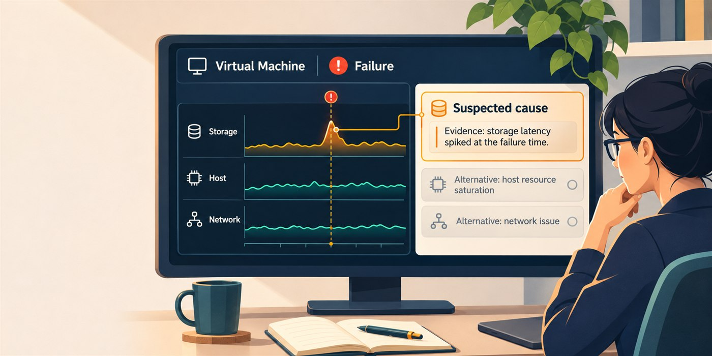
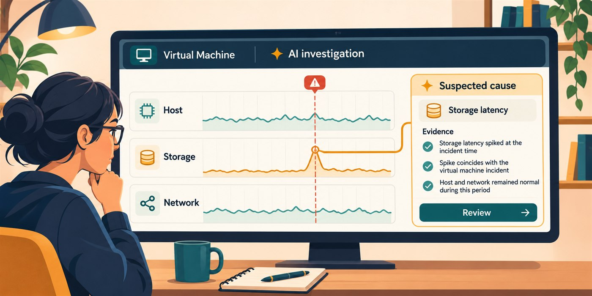

01 — AI PRODUCT CASE STUDY
Autonomous Diagnostics Agent
Developed a diagnostic agent that investigates what happened to a cloud resource. It tests possible causes against telemetry and gives support engineers an evidence-backed finding and remediation guidance to review.

01
THE CONTEXT
It All Started When...
The first-response assistant could suggest answers from similar cases and documentation. It lacked access to evidence about the affected resource, so unfamiliar or ambiguous cases still depended on specialists who knew where to look across platform telemetry.
02
PRODUCT OWNERSHIP
Harpreet's Role
- PRD & technical specs: Scoped the virtual-machine pilot and defined evidence, confidence, alternatives, gaps, and undetermined outcomes.
- Cross-functional collaboration & stakeholder management: Aligned engineering and data owners on caller authorization, least privilege, and query controls.
- Kanban board & backlog prioritization: Prioritized historical-case evaluation, responsible AI review, and production-readiness work.
- Retrospective & iteration planning: Used evaluation findings to guide safe expansion to additional services and telemetry.
03
WHAT CHANGED
Results
- Built an investigation capability for the first-response workflow. It can test multiple explanations and return a structured finding with the evidence and checks behind it.
- Created a separate, sanitized remediation output for engineer review before customer use.
- Established a repeatable historical-case evaluation and safety review process to support decisions about expanding to more services and telemetry sources.
04
ILLUSTRATIVE OUTCOMES
Measurement example
- 152 of 200proposed root causes approved by an independent evaluator (76%).
- 75 → 46 minmedian diagnosis time across comparable investigations (38.7% shorter).

EXPLORE THE FULL PROJECT
Want the complete case study?
Email me for the complete case study and program materials.
Email for the complete case study